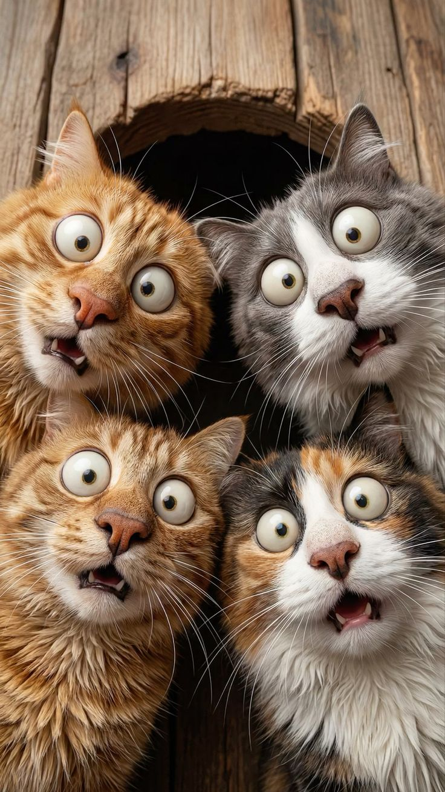

Belles Histoires
Les nouvelles de nos moustachus adoptés et leurs histoires de bonheur

Un adoption n'est que le début d'une belle histoire. Ici, les adoptants partagent les moments précieux, les anecdotes amusantes et les progrès de nos chats adorés. C'est un mur de tendresse où chaque nouvelle raconte la vie de famille que nos moustachus vivent maintenant.